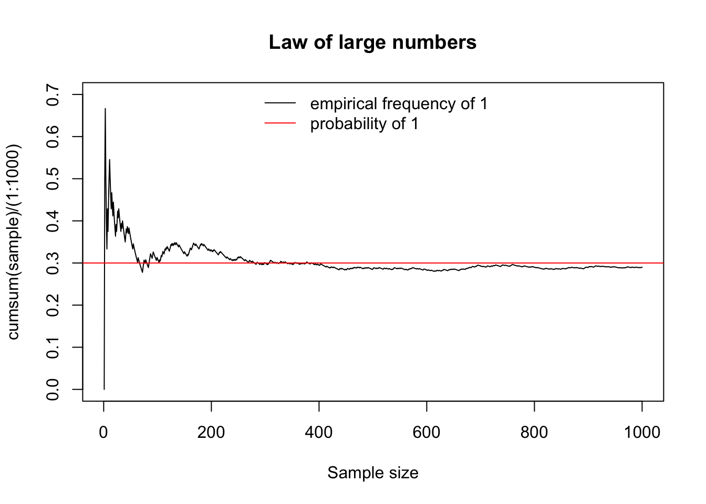

Chapter 8 Probability distributions
Let \(X\) be a random variable whose distribution is law:
dlaw(x, parameters)computes the probability \(P(X = x)\) if \(X\) is discrete, and the density value \(f(x)\) if \(X\) is continuous with density \(f\).plaw(q, parameters)computes the value of the Cumualative Distribution Function (CDF) in \(q\), ie \(F(q) = P(X \leq q)\).qlaw(p, parameters)gives the quantile of order \(p\), that is the value \(q\) such that \(p = P (X \leq q)\).rlaw(m, parameters)generates \(m\) independent random numbers according to the distribution of \(X\), ie a sample of size \(m\) of \(X\).
Consult the help with ?dlaw.
The set.seed() function allows you to set the seed of the random number generator. This is useful when you want to obtain identical simulations:
## [1] 0.6384378## [1] 0.3643132## [1] 0.914806## [1] 0.9148068.1 Discrete distributions of discrete random variables
Important discrete random variables are
- Binomial variable \(\mathcal{B}(n, p)\) counting the number of successes out of \(n\) independent trials each with probability \(p\) of success:
rbinom(m, size = n, prob = p). This law has \(n + 1\) distinct possible values: \(0,1,\ldots, n\). - Bernoulli variable \(\mathcal{B}(p)\) reporting the outcome of a binary trial with probability \(p\) of success:
rbinom(m, size = 1, prob = p) - Geometric variable \(\mathcal{G}(p)\) counting the number of failures before success in independent trials:
rgeom(n, prob = p) - Poisson variable \(\mathcal{P}(\lambda)\):
rpois(m, lambda = lambda)
An important random process which is very useful to simulate in many situations, is the withdrawl of \(n\) balls of different colors out of a box. This can be done with
sample(x = box, size = n, replace = TRUE / FALSE, prob = probability of the different colors)
For instance:
## [1] "red" "black" "red" "green" "green" "green" "black" "green" "green"
## [10] "green" "green" "red" "black" "green" "red" "red" "black" "green"
## [19] "green" "red"8.2 Continuous distributions
Important continuous distributions are:
- Uniform distribution \(\mathcal{U}_{[a, b]}\) in the interval \([a,b]\):
runif(m, min = a, max = b) - Normal variable \(\mathcal{N}(\mu, \sigma^2)\):
rnorm(m, mean = mu, sd = sigma) - Exponential law \(\mathcal{E}(\lambda)\):
rexp(m, rate = lambda) - Chi-square law with \(r\) degrees of freedom \(\mathcal{\chi}^2 (r)\):
rchisq (m, df = r) - Student’s law with \(r\) degrees of freedom:
rt(m, df = r)
8.3 Example: the Law of Large Numbers
We toss \(n\) times a biased coin such that the probability of getting head is \(p=0.3\) and then we calculate the proportion of heads obtained. The Law of Large Numbers says that this proportion gets closer and closer to \(p\) as \(n\) gets larger.
# 1: head, 0: tail
sample = sample(x = c(0,1), size = 1000, replace = T, prob = c(.7, .3))
plot(cumsum(sample)/(1:1000),
type = 'l',
main = 'Law of large numbers',
ylim = c (0,0.7),
xlab = 'Sample size')
abline (h = .3, col = 2)
legend (x = 'top',
lty = 1, col = 1: 2,
legend = c ('empirical frequency of 1', 'probability of 1'),
bty = 'n')
Notes:
- To get the number of heads as a function of \(n\) we used the
cumsum()function. Try the following:
# for each n we count how many 1s there are in the first n positions:
cumsum(c(0,0,1,0,1,1,0))
# for each n we calculate the proportions of 1s in the first n positions
cumsum(c(0,0,1,0,1,1,0))/1:7- Instead of
sample()we could have usedrbinom(n = 1000, size = 1, prob = .3)
Xie, Yihui. 2016. Bookdown: Authoring Books and Technical Documents with R Markdown. Boca Raton, Florida: Chapman; Hall/CRC. https://github.com/rstudio/bookdown.
———. 2020. Bookdown: Authoring Books and Technical Documents with R Markdown. https://CRAN.R-project.org/package=bookdown.